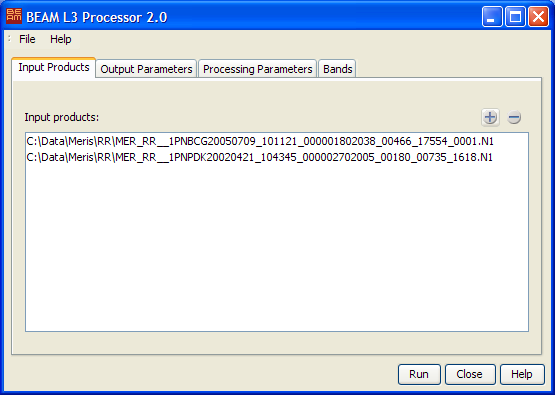
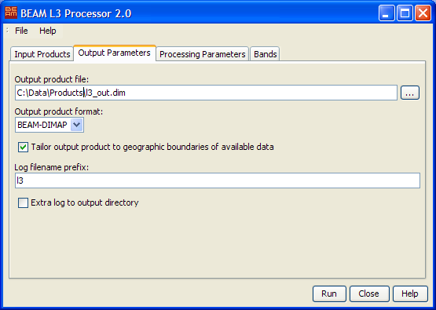
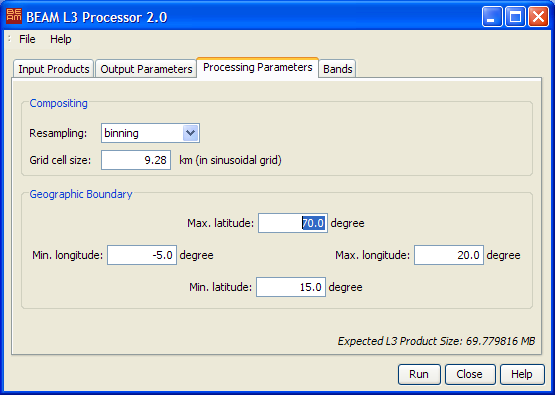
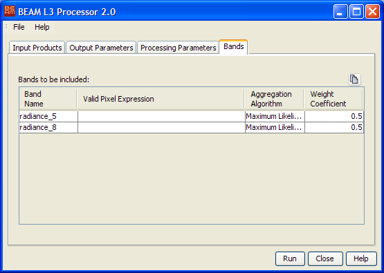

The Level 3 Binning Processor implements the complete Level 3 Processing chain in one processor.
The Level 3 Binning Processor Input Products tab

- Input Products:
Select any number of input products to be processed. The
button invokes a standard file dialog to select input products.
The
removes all selected products from the list. Click on an item to select it.
Press "STRG" and click to add items to the selection. Press "SHIFT"
and click to select a range of items.
The L3 Processor Output Parameter tab

- Output product file: Select the output product file by either typing
the product path into the text field or by pressing the file selection button
 to invoke a
standard file dialog.
to invoke a
standard file dialog.
- Output product format: Select one of the available output product
formats.
- Tailor output product to geographic boundaries of available data: Enable
this checkbox to tailor the geopraphic size of the output product to the area that really contains data.
- Log filename prefix: Select the prefix text used for the logfile
written during processing. For a complete description of the logging capabilities
please refer to the logging documentation.
- Extra log to output directory: Enable this checkbox to get an additional log file,
placed in the same directory like the output product.
The L3 Processor Processing Parameters tab

- Resampling: Choose between binning and flux-conserving. When you switch
the resampling mode, the way the grid cell size is meassured changes, too.
The binning resampling uses a sinusoidal equal area grid whereas the flux-conserving resampling uses
an equal angle grid.
- Grid cell size: In case of binning resampling the grid cell size is specified in kilometers.
If the resampling method is set to flux-conserving the grid is specified by the number of bins per degree.
- Max latitude: Enter the maximum latitude of the target product. All
pixels above this limit are rejected during processing.
- Min longitude: Enter the minimum longitude of the target product.
All pixels below this limit are rejected during processing.
- Max longitude: Enter the maximum longitude of the target product.
All pixels above this limit are rejected during processing.
- Min latitude: Enter the minimum latitude of the target product. All
pixels below this limit are rejected during processing.
- Expected L3 Product Size: Displays the estimated size of the final
Level 3 product. Please note that this size may be significantly higher than
the real disk size as the Level 3 processor dynamically chooses the minimal
product size possible with the given set of input products.
The L3 Processor Bands tab

It is possible to process multiple bands from the input product at once.
Choose the geophysical bands to be binned in the band chooser  .
This is only possible if an input product has already been selected. Afterwards for each band the following
parameters can be specified:
.
This is only possible if an input product has already been selected. Afterwards for each band the following
parameters can be specified:
- Valid Pixel expression: Type in a bitmask expression to be evaluated
during the binning process. This field might be left empty - then no bitmask
is taken into account and all pixels are processed. Please either type in
the bitmask expression into the text field or invoke the bitmask expression
editor by pressing the button to the
right.
- Aggregation algorithm: Select one of the available aggregation algorithms.
- Weight coefficient: Enter the weight coefficient to be used during
accumulation.
The L3 Processor processing request file
The processing request file for the L3 Processor consists of three chained processing
requests of the appropriate subprocessors, please see there:
L3 Initial Processor
L3 UpdateProcessor
L3 FinalProcessor